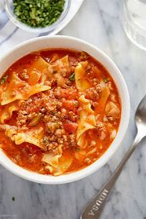

Real Lasagna Soup

Description
This incredible lasagna soup tastes exactly like a really good lasagna, but is a very rich, very meaty tomato soup. The little bit of extra work you'll do—precooking the noodles, then baking them in the oven—is absolutely worth the time and effort. The buttery, baked, and toasted noodles that are then added to the soup make this absolutely phenomenal.
Ingredients
- 8 ounces dry lasagna noodles
- 1 tablespoon olive oil
- 2 tablespoons butter
- Fill a large pot with lightly salted water and bring to a rolling boil. Stir in lasagna noodles and return to a boil. Cook pasta uncovered, stirring occasionally, until just flexible, 4 to 5 minutes. Transfer noodles into cold water until cooled; drain very well.
- Preheat the oven to 475 degrees F (245 degrees C). Line a baking sheet with parchment paper, and grease parchment with 1 tablespoon olive oil.
- Cut noodles in half lengthwise. Arrange noodles in evenly overlapping rows on the prepared baking sheet. Brush with melted butter, and use fingers to rub some butter between the noodles.